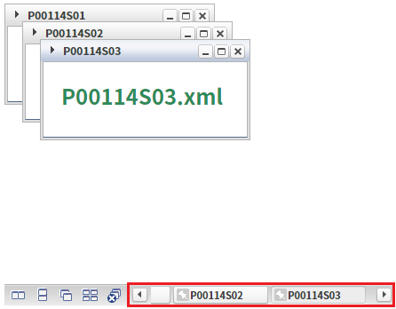
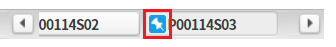
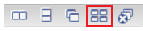
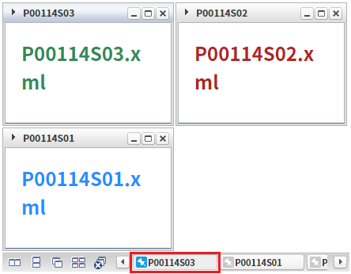
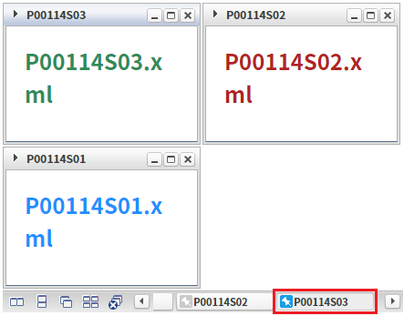
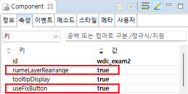

WindowContainer의 'nameLayerRearrange' 속성을 사용하여, 핀으로 고정한 윈도우의 네임 레이어를 맨 앞으로 배치한 예제입니다. 이 속성을 'true'로 설정하면, 정렬 아이콘이 클릭되었을 때, 고정 버튼이 활성화된 네임 레이어를 앞으로 배치합니다. 단, 'useFixButton' 속성이 'true'로 설정되어야 동작합니다.
고정된 윈도우의 네임 레이어를 앞으로 배치하기
기본 동작
예제 영역 '고정된 윈도우의 네임 레이어를 앞으로 배치하기'에서 테스트합니다.1
STEP 1: 네임 레이어 배치 확인하기
WindowContainer에 구성된 네임 레이어의 순서를 확인합니다. 화면에 표시된 순서는 "P00114S01", "P00114S02", "P00114S03"입니다.
Image 1.브라우저(Chrome) 실행 예시

2
STEP 2: 네임 레이어의 고정 핀 활성화하기
네임 레이어 "P00114S03"의 고정 핀 아이콘을 클릭합니다.
Image 2.브라우저(Chrome) 실행 예시 - 윈도우 네임 레이어

3
STEP 3: 윈도우 정렬 아이콘을 클릭합니다.
Image 3.브라우저(Chrome) 실행 예시 - 윈도우 정렬 아이콘

4
STEP 4: 실행된 결과를 확인합니다.
네임 레이어 "P00114S03"이 맨 앞쪽으로 이동되었음을 확인합니다.
Image 4.브라우저(Chrome) 실행 예시 - 윈도우 네임 레이어

예제 영역 '기본 동작'에서 테스트합니다.1
STEP 1: 네임 레이어 배치 확인하기
WindowContainer에 구성된 네임 레이어의 순서를 확인합니다. 화면에 표시된 순서는 "P00114S01", "P00114S02", "P00114S03"입니다.
Image 5.브라우저(Chrome) 실행 예시
2
STEP 2: 네임 레이어의 고정 핀 활성화하기
네임 레이어 "P00114S03"의 고정 핀 아이콘을 클릭합니다.
Image 6.브라우저(Chrome) 실행 예시 - 윈도우 네임 레이어
3
STEP 3: 윈도우 정렬 아이콘을 클릭합니다.
Image 7.브라우저(Chrome) 실행 예시 - 윈도우 정렬 아이콘
4
STEP 4: 실행된 결과를 확인합니다.
네임 레이어 "P00114S03"의 위치가 동일한 것을 확인합니다.
Image 8.브라우저(Chrome) 실행 예시 - 윈도우 네임 레이어

WindowContainer에 윈도우를 생성(추가)하는 스크립트는 생략되었습니다.
WindowContainer의 속성을 정의합니다.
[필수] nameLayerRearrange="true"
[default:false, true] 네임레이어에 고정버튼이 있는 경우, 정렬 아이콘을 클릭하면 고정된 window의 name layer를 앞으로 이동시킬지 여부. 단, useFixButton="true"인 경우 동작.
[필수] useFixButton="true"
[default:false, true] 툴바에 생성되는 네임레이어에 고정 버튼을 사용할 지의 여부.
Image 9.웹스퀘어 스튜디오의 Component View 예시

Example 1.Source
<!-- windowContainer 의 소스 본문 예시 --> <w2:windowContainer nameLayerRearrange="true" useFixButton="true" id="wdc_exam2"> <!-- 중략 --> </w2:windowContainer>
nameLayerRearrange
useFixButton